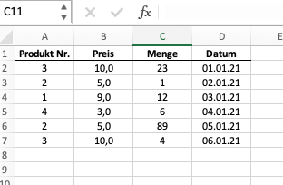
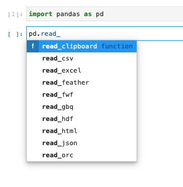

import pandas as pdPandas
Allzweckwaffe für Datenanalyse
Im Kontext der Datenanalyse haben wir es oft mit tabularischen Daten zu tun, d.h. wir arbeiten mit Informationen und/oder Daten, die in Tabellen gespeichert sind. Typischerweise haben diese Informationen Beschriftungen und sind von unterschiedlichen Typen. Stellen wir uns dies in Excel vor: wir haben mehrere Spalten, jede Spalte hat eine Bezeichnung, die beschreibt, um welche Information es sich handelt. Einige Spalten haben numerische Informationen (z.B. Umsätze), andere haben text-basierte Informationen (z.B. Namen oder Orte), wieder andere haben ein Datum als Spalteninhalt. Pandas ist das Modul, welches für den Umgang mit dieser Art von Daten gemacht wurde.
Pandas unterstützt alle Schritte des Analyseprozesses, in dem es hierfür sinnvolle Funktionalitäten bereitstellt. Die gesamte Bandbreite an Funktionalitäten ist so groß, dass es unmöglich ist, diese im Rahmen eines Kurses zu erläutern und vorzustellen. Zusätzlich ist es so, dass Pandas am Besten im Zusammenspiel mit anderen Modulen (z.B. mit dem Visualisierungsmodul seaborn) eingesetzt wird.
In diesem Kapitel werden wir einige wichtige Grundlagen von Pandas vorstellen. Wir nutzen hierfür - wie in den vorherigen Kapiteln auch - kleine Beispieldaten. Im nächsten Kapitel werden wir dann realistischere Datensätze verwenden, um wichtige Konzepte quasi am “lebenden Objekt” zu erlernen. Wir glauben, dass Sie zunächst einige wichtige Grundlagen verstanden haben müssen. Um diese zu erläutern benötigen wir keine “echten” Daten. Ab einem gewissen Punkt geht es jedoch nicht mehr darum isolierte Funktionen vorzustellen, sondern vielmehr den tatsächlichen Prozess der Datenanalyse zu durchlaufen, um dann auf reale Probleme zu stoßen und praxirelevante Lösungsansätze vorzustellen.
Grundlagen
Wir stellen im Folgenden ausgewählte Grundlagen des Moduls vor. Hierbei fokussieren wir uns auf
- das Importieren des Moduls
- das Erstellen von
SeriesundDataframes
Importieren von Pandas
Bevor wir Pandas nutzen können, müssen wir das Modul zunächst importieren1. Wir können hier prinzipiell wieder vorgehen, wie wir dies in Kapitel Kapitel 6.5.2 bereits kennengelertn haben. Pandas wird typischerweise als gesamtes Modul mit einem Alias importiert. Der Alias pd ist dabei der Standard, der von 99% der Pandas-Nutzer verwendet wird.
1 Wir gehen davon aus, dass das Modul bereits installiert ist.
Series und Dataframes
Das Herzstück von Pandas ist der sogenannte Dataframe (pd.Dataframe). Sie können sich ein Dataframe als eine Art Excel-Sheet bzw. eine Excel-Tabelle vorstellen. So wie in Excel jede Tabelle aus einer Ansammlung aus Spalten besteht, ist ein Dataframe in Pandas eine Ansammlung von Series (pd.Series).
Schauen wir uns das untenstehende Excelbeispiel an.

Die abgebildete Excel-Tabelle ist in dieser Analogie ein dataframe. Jeder ihrer Spalten eine series. Die Spalte “Preis” wäre eine Series mit floats, d.h. mit Dezimalzahlen. Die Spalte “Datum” wäre eine Series vom Typ str oder von einem Typ, der ein Datum abbilden kann (diesen Datentyp werden wir in diesem Kapitel noch kennenlernen).
Schauen wir uns an, wie wir diese Daten in pandas abbilden.
Erstellen von Series
Wenn wir die Spalte Menge nachbilden möchten, so können wir z.B. folgendes schreiben:
menge = pd.Series([23, 1, 12, 6, 89,4], name="Menge")
menge0 23
1 1
2 12
3 6
4 89
5 4
Name: Menge, dtype: int64Die Series hat den Namen Menge und enthält die Werte 23, 1, 12, 6, 89 und 4. Die Werte sind alle vom Typ int.2 Darüber hinaus beinhaltet die Series einen Index. Der Index ist eine Art Beschriftung der einzelnen Werte. In diesem Fall ist der Index eine fortlaufende Nummerierung. Ein Index in Python beginnt immer bei 0.
2 Hinweis:genauer gesagt vom Typ int64. Die Zahl hinter int macht deutlich, dass es eine 64-bit Integer ist und gibt uns damit Aufschluss über den abbildbaren Wertebereich (und damit auch über den benötigten Speicher) des Datentyps. Diese technischen Feinheiten sind für unsere Zwecke an dieser Stelle nicht relevant. Weitere Informationen dazu finden Sie z.B. hier.
Erstellen wir nun eine Series, die die Spalte Preis abbildet und speichern diese in der Variable “preis”. Wir schreiben den ersten Wert mit Dezimalpunkt, da die Series dann automatisch erkennt, dass es sich um den Datentyp float handelt.
preis = pd.Series([10., 5, 9, 3, 5, 10], name="Preis") # Der Dezimalpunkt signalisiert "float"
preis0 10.0
1 5.0
2 9.0
3 3.0
4 5.0
5 10.0
Name: Preis, dtype: float64Wir könnten den Datentyp auch explizit angeben. Der untenstehende Code gibt z.B. an, dass die Series vom Datentyp str sein soll, so dass die Elemente Texte sind. In Pandas wird dies dann als object bezeichnet.
preis_str = pd.Series([10., 5, 9, 3, 5, 10], name="Preis", dtype="object")
preis_str 0 10.0
1 5
2 9
3 3
4 5
5 10
Name: Preis, dtype: objectErstellen von Dataframes
Dataframes können manuell erstellt werden oder aus externen und einzulesenden Daten erstellt werden. Wir gehen hier zunächst auf die manuelle Erstellung ein. Diese benötigen wir in der Praxis oft gar nicht, weil wir meist auf externe Daten (z.B. Excel-, CSV-, SQL- oder TXT-Dateien) zugreifen. Dennoch ist es wichtig zu verstehen, wie Dataframes manuell erstellt werden können, da dies (i) hilft, den grundsätzlichen Aufbau von Dataframes zu verstehen und (ii) oft nützlich ist, um kleinere Datensätze zu Testzwecken zu erzeugen.
Manuelle Erstellung
Wir können Dataframes auf verschiedene Art und Weisen erstellen. Wir gehen hier auf eine Variante ein, die oft genutzt wird und die aus unserer Sicht aller meisten Anwendungsfälle abdeckt: wir erstellen Dataframes über sogenannte Dictionaries (dict). Ein Python-Dictionary ist ein Datentyp, der eine Sammlung von Schlüssel-Wert-Paaren darstellt. Jeder Schlüssel ist eindeutig und wird verwendet, um seinen zugehörigen Wert abzurufen. Hier ist ein Beispiel:
telefonbuch = {"Max": "555-555-1212",
"Anna": "555-555-1213",
"Peter": "555-555-1214"}In diesem Beispiel ist das Dictionary telefonbuch mit drei Schlüssel-Wert-Paaren gefüllt, wobei jeder Name (Max, Anna, Peter) einen Telefonnummer-Wert hat. WIr können jedoch auch (fast) beliebige Datentypen als Werte verwenden.
familienmitglieder = {"Max": ["Frau", "Kind1","Kind2"],
"Anna": ["Mann", "Kind"],
"Peter": []} # Peter ist single...Wenn wir ein Dataframe mittels Dictionary erzeugen, dann werden die Schlüssel als Spaltenbezeichnung übernommen und die Werte dann als Daten unterhalb der Spaltenbezeichnung eingelesen.
Hier der Beispielcode für ein Dataframe, welcher die Spalten (in dem Falle Series) “Preis” und “Menge” beinhaltet.
df = pd.DataFrame({"Menge": [23, 1, 12, 6, 89, 4],
"Preis":[10., 5, 9, 3, 5, 10]})
df| Menge | Preis | |
|---|---|---|
| 0 | 23 | 10.0 |
| 1 | 1 | 5.0 |
| 2 | 12 | 9.0 |
| 3 | 6 | 3.0 |
| 4 | 89 | 5.0 |
| 5 | 4 | 10.0 |
Wir sehen, dass die Schlüssel Menge und Preis als Spaltenbezeichnung übernommen wurden. Die einzelnen Werte sind im obigen Fall von Datentyp list (eine Liste).
Wir können hier jedoch auch andere Datentypen nutzen. So können wir auch Series einfügen. Dies ist sehr praktisch, da wir im Rahmen unser Analysen mit verschiedenen Datentypen arbeiten werden.
df = pd.DataFrame({"Menge": menge,
"Preis":preis})
df | Menge | Preis | |
|---|---|---|
| 0 | 23 | 10.0 |
| 1 | 1 | 5.0 |
| 2 | 12 | 9.0 |
| 3 | 6 | 3.0 |
| 4 | 89 | 5.0 |
| 5 | 4 | 10.0 |
Einlese von Daten
Wie bereits angesprochen ist es realistisch, dass wir bereits über Daten verfügen und diese in Pandas einlesen möchten. Hierfür bietet Pandas eine Vielzahl an Methoden, die es ermöglicht nahezu jeden Dateityp einzulesen. Wir werden uns in den nächsten Kapiteln auf das Einlesen von Excel- und CSV-Dateien beschränken. Das grundsätzliche Vorgehen ist jedoch - unabhängig vom Dateityp - sehr ähnlich.
Pandas bietet die Methoden zum Einlesen von externen Daten via pd.read_ an.
Wir können uns über pd.read_<tab> anzeigen lassen, welche Funktionen zur Verfügung stehen und uns die gewünschte raussuchen.

Zum Einlesen der gewünschten Daten benötigen wir typischerweise den Dateipfad, d.h. den Ort, in welchem die Datei auf dem Computer oder in der Cloud hinterlegt ist.
Beispiel 1: Einlesen einer Excel-Datei mit relativer Pfad-Angabe
fpath = "../../_data/sales.xlsx"
sales = pd.read_excel(fpath)
sales| Produkt | Preis | Menge | Datum | |
|---|---|---|---|---|
| 0 | Apple | 0.79 | 10 | 2022-01-01 |
| 1 | Orange | 1.99 | 1 | 2022-01-02 |
| 2 | Orange | 1.99 | 5 | 2022-01-03 |
| 3 | Banana | 0.79 | 1 | 2022-01-04 |
| 4 | Apple | 0.79 | 7 | 2022-01-05 |
| 5 | Orange | 1.99 | 2 | 2022-01-06 |
| 6 | Banana | 0.79 | 9 | 2022-01-07 |
| 7 | Apple | 1.99 | 4 | 2022-01-08 |
| 8 | Apple | 2.49 | 8 | 2022-01-09 |
| 9 | Orange | 2.49 | 7 | 2022-01-010 |
Der Dateipfad ist immer relativ zum aktuellen Arbeitsverzeichnis des Notebooks, in dem wir arbeiten. In dem angegebenen Dateipfad ../../_data/sales.xlsx bezieht sich ../ auf ein Verzeichnis, das eine Ebene höher als das aktuelle Verzeichnis liegt. Da es zwei Mal ../ im Pfad gibt, befindet sich die Datei sales.xlsx in einem Verzeichnis, das zwei Ebenen höher als das aktuelle Verzeichnis liegt. Der Unterordner _data befindet sich in diesem höher liegenden Verzeichnis. Daher befindet sich die Datei sales.xlsx in dem Unterverzeichnis _data einer Ebene höher als das aktuelle Verzeichnis.
Da die Pfadangaben sich zwischen den Betriebssystemen unterscheiden, ist es empfehlenswert, die pathlib-Bibliothek zu verwenden, um die Pfadangaben zu erstellen.
from pathlib import Path
fpath = Path.cwd() /".." / ".." / "_data" / "sales.xlsx"
sales = pd.read_excel(fpath)
sales| Produkt | Preis | Menge | Datum | |
|---|---|---|---|---|
| 0 | Apple | 0.79 | 10 | 2022-01-01 |
| 1 | Orange | 1.99 | 1 | 2022-01-02 |
| 2 | Orange | 1.99 | 5 | 2022-01-03 |
| 3 | Banana | 0.79 | 1 | 2022-01-04 |
| 4 | Apple | 0.79 | 7 | 2022-01-05 |
| 5 | Orange | 1.99 | 2 | 2022-01-06 |
| 6 | Banana | 0.79 | 9 | 2022-01-07 |
| 7 | Apple | 1.99 | 4 | 2022-01-08 |
| 8 | Apple | 2.49 | 8 | 2022-01-09 |
| 9 | Orange | 2.49 | 7 | 2022-01-010 |
Beispiel 2: Einlesen einer Excel-Datei via Link
link = "https://www.dropbox.com/s/oub2za2hu8yp8oj/sales1.xlsx?dl=1"
df = pd.read_excel(link)
df| Produkt Nr. | Preis | Menge | Datum | |
|---|---|---|---|---|
| 0 | 3 | 10 | 23 | 2021-01-01 |
| 1 | 2 | 5 | 1 | 2021-01-02 |
| 2 | 1 | 9 | 12 | 2021-01-03 |
| 3 | 4 | 3 | 6 | 2021-01-04 |
| 4 | 2 | 5 | 89 | 2021-01-05 |
| 5 | 3 | 10 | 4 | 2021-01-06 |
Wenn sich die Datei auf einem Server oder einer Cloud befindet (hier: Dropbox), dann können wir die Datei auch direkt via Link einlesen. Der Vorteil ist, dass wir uns keine Gedanken darüber machen müssen, wo die Datei auf dem Computer gespeichert ist. Der Nachteil ist jedoch, dass wir (i) die Datei nicht lokal speichern können und (ii) die Ladezeiten oft länger sind.
Die jeweiligen pd.read_-Methoden haben eine Vielzahl von optionalen Parametern, die man übergeben kann. Wir werden an dieser Stelle nicht auf alle eingehen. Grundsätzlich können Sie aber quasi davon ausgehen, dass es für alle typischen Optionen, die man beim Einlesen von Daten benötigt (z.B. nur bestimmte Spalten, nur bestimmte Tabellenblätter, Auswahl der Spaltenbezeichnung, Auswahl von Datentypen, Datumsformat) eine optionale Auswahlmöglichkeit innerhalb der Methode gibt. Sie können diese via pd.read_<..>? aufrufen lassen.
Aufbau eines Dataframes
Ein Dataframe ist immer eine Tabelle, mit zwei Achsen:
- vertikale Achse: wird als
Indexbezeichnet - horizontale Achse: werden als
Columns(d.h. Spalten) bezeichne
Der Index eines Dataframes ist standardmäßig numerisch und beginnt bei 0. Der Index ist vergleichbar mit den Zeilenbezeichnungen in Excel.

Wir greifen auf Index und Spalten wie folgt zu:
idx = df.index
idxRangeIndex(start=0, stop=6, step=1)cols = df.columns
colsIndex(['Produkt Nr.', 'Preis', 'Menge', 'Datum'], dtype='object')Über diese Logik können wir auch neue Werte für den Index oder die Spaltenbezeichnung erstellen.
df.index = ["A", "B", "C", "D", "E", "F"]
df.columns = ["H1", "H2", "H3", "H4", ]
df| H1 | H2 | H3 | H4 | |
|---|---|---|---|---|
| A | 3 | 10 | 23 | 2021-01-01 |
| B | 2 | 5 | 1 | 2021-01-02 |
| C | 1 | 9 | 12 | 2021-01-03 |
| D | 4 | 3 | 6 | 2021-01-04 |
| E | 2 | 5 | 89 | 2021-01-05 |
| F | 3 | 10 | 4 | 2021-01-06 |
Auswahl von Daten
Im Rahmen einer Datenanalyse wird es vorkommen, dass wir uns auf bestimmte Zeilen oder Spalten eines Dataframes beziehen wollen. Schauen wir uns an, wie wir dies in Python machen.
Leider gibt es verschiedene Ansätze, um Daten zu selektieren. Wir werden hier ein paar gängige Ansätze vorstellen. Im Rahmen ihrer Online-Recherchen werden Sie ggf. auf weitere Ansätze stoßen. Hierbei gibt es oft kein “richtig” oder “falsch”. Schauen Sie, was für Sie ein passender Ansatz ist. Wir geben darüber hinaus an den relevanten Stellen Hinweise, wenn bestimmte Ansätze sich als besonders geeignet herausstellen.
Auswahl von Spalten
Ein einfacher und gängiger Weg, bestimmte Spalten zu selektieren, ist die Auswahl via Spaltenname.
Datensatz:
df = sales.copy()
df| Produkt | Preis | Menge | Datum | |
|---|---|---|---|---|
| 0 | Apple | 0.79 | 10 | 2022-01-01 |
| 1 | Orange | 1.99 | 1 | 2022-01-02 |
| 2 | Orange | 1.99 | 5 | 2022-01-03 |
| 3 | Banana | 0.79 | 1 | 2022-01-04 |
| 4 | Apple | 0.79 | 7 | 2022-01-05 |
| 5 | Orange | 1.99 | 2 | 2022-01-06 |
| 6 | Banana | 0.79 | 9 | 2022-01-07 |
| 7 | Apple | 1.99 | 4 | 2022-01-08 |
| 8 | Apple | 2.49 | 8 | 2022-01-09 |
| 9 | Orange | 2.49 | 7 | 2022-01-010 |
Hier ein Beispiel für die Selektion einer Spalte. Das Resultat ist eine Series.
# Auswahl der Spalte "Menge"
menge = df["Menge"]
menge0 10
1 1
2 5
3 1
4 7
5 2
6 9
7 4
8 8
9 7
Name: Menge, dtype: int64Natürlich können wir aber auch mehrere Spalten gleichzeitig auswählen. Wir machen dies, in dem wir eine Liste mit Spaltennamen übergeben. Das Resultat ist dann ein Dataframe.
# Auswahl der Spalten "Menge" und "Preis"
menge_preis = df[["Menge", "Preis"]]
menge_preis| Menge | Preis | |
|---|---|---|
| 0 | 10 | 0.79 |
| 1 | 1 | 1.99 |
| 2 | 5 | 1.99 |
| 3 | 1 | 0.79 |
| 4 | 7 | 0.79 |
| 5 | 2 | 1.99 |
| 6 | 9 | 0.79 |
| 7 | 4 | 1.99 |
| 8 | 8 | 2.49 |
| 9 | 7 | 2.49 |
Wir können die gleiche Funktionalität auch mit einer speziellen Funktion .filter erreichen.
df.filter(items=["Menge", "Preis"])| Menge | Preis | |
|---|---|---|
| 0 | 10 | 0.79 |
| 1 | 1 | 1.99 |
| 2 | 5 | 1.99 |
| 3 | 1 | 0.79 |
| 4 | 7 | 0.79 |
| 5 | 2 | 1.99 |
| 6 | 9 | 0.79 |
| 7 | 4 | 1.99 |
| 8 | 8 | 2.49 |
| 9 | 7 | 2.49 |
Die Funktion bietet weitere Möglichkeiten. So können wir Spalten auch nach bestimmten (einfachen) Logiken filtern. Wir könnten z.B. interessiert sein an allen Spalten, die mit “P” beginnen. Dies können wir einfach erreichen mit
df.filter(like="P")| Produkt | Preis | |
|---|---|---|
| 0 | Apple | 0.79 |
| 1 | Orange | 1.99 |
| 2 | Orange | 1.99 |
| 3 | Banana | 0.79 |
| 4 | Apple | 0.79 |
| 5 | Orange | 1.99 |
| 6 | Banana | 0.79 |
| 7 | Apple | 1.99 |
| 8 | Apple | 2.49 |
| 9 | Orange | 2.49 |
Auswahl von Zeilen
Sie können auch spezifische Zeilen auswählen. Die üblichste Variante ist dies über die Methoden iloc und loc zu machen.
- Auswahl auf Basis von Index- oder Spaltennumerierung:
iloc - Auswahl auf Basis von Index- oder Spaltenbezeichnung:
loc
Wichtig: auch in Pandas ist das erste Elemente wie bei allen anderen Datentypen für die dies relevant war sowohl für Index, als auch für Columns immer an der Stelle 0.
Gerade für Beginner ist die Auswahl via iloc und loc zunächst verwirrend. Lassen Sie uns deshalb einige typische Beispiele durchgehen.
Zur Übersicht stellen wir hier noch einmal unseren Ausgangsdatensatz dar:
| Produkt | Preis | Menge | Datum | |
|---|---|---|---|---|
| 0 | Apple | 0.79 | 10 | 2022-01-01 |
| 1 | Orange | 1.99 | 1 | 2022-01-02 |
| 2 | Orange | 1.99 | 5 | 2022-01-03 |
| 3 | Banana | 0.79 | 1 | 2022-01-04 |
| 4 | Apple | 0.79 | 7 | 2022-01-05 |
| 5 | Orange | 1.99 | 2 | 2022-01-06 |
| 6 | Banana | 0.79 | 9 | 2022-01-07 |
| 7 | Apple | 1.99 | 4 | 2022-01-08 |
| 8 | Apple | 2.49 | 8 | 2022-01-09 |
| 9 | Orange | 2.49 | 7 | 2022-01-010 |
Beispiel 1: Auswahl der Zeilen 0, 3 und 5
df.iloc[[0, 3, 5]]| Produkt | Preis | Menge | Datum | |
|---|---|---|---|---|
| 0 | Apple | 0.79 | 10 | 2022-01-01 |
| 3 | Banana | 0.79 | 1 | 2022-01-04 |
| 5 | Orange | 1.99 | 2 | 2022-01-06 |
Beispiel 2: Auswahl der ersten 3 Zeilen
df.iloc[:3]| Produkt | Preis | Menge | Datum | |
|---|---|---|---|---|
| 0 | Apple | 0.79 | 10 | 2022-01-01 |
| 1 | Orange | 1.99 | 1 | 2022-01-02 |
| 2 | Orange | 1.99 | 5 | 2022-01-03 |
Beispiel 3: Auswahl der ersten 4 Zeilen und der Spalten 0 und 2
df.iloc[:4, [0, 2]]| Produkt | Menge | |
|---|---|---|
| 0 | Apple | 10 |
| 1 | Orange | 1 |
| 2 | Orange | 5 |
| 3 | Banana | 1 |
Beispiel 4: Auswahl der ersten drei Zeilen und Spalten
df.iloc[:3, :3]| Produkt | Preis | Menge | |
|---|---|---|---|
| 0 | Apple | 0.79 | 10 |
| 1 | Orange | 1.99 | 1 |
| 2 | Orange | 1.99 | 5 |
Die oberen Beispiele haben wir iloc genutzt: wir greifen jeweils auf die Numerierung der Spalte oder des Index zu. D.h. wir greifen auf z.B. Zeile 2 oder Spalte 0 zu.
Sobald wir auf den Index oder die Spalte mit einer bestimmten Bezeichnung zugreifen wollen, dann müssen wir loc nutzen. Dies ist insbesondere im Falle der Spalten sehr häufig der Fall.
Beispiel 5: Auswahl der Zeilen 2 und 4 und der Spalten “Menge” und “Preis”
df.loc[[2, 4], ["Menge", "Preis"]]| Menge | Preis | |
|---|---|---|
| 2 | 5 | 1.99 |
| 4 | 7 | 0.79 |
In vielen Anwendungsfällen wollen wir die Spalten über die Spaltenbezeichnungen auswählen, d.h. wir müssen loc nutzen. In weniger häufigen, aber durch aus teilweise relevanten Anwendungsfällen ist ggf. auch der Index nicht standardmäßig nummeriert. Auch dann müssen wir loc nutzen.
Hier ein Beispiel mit einem angepassten Index:
df.index = list("abcdefghij") # Abkürzung für ["a", "b", ..., "e"]
df| Produkt | Preis | Menge | Datum | |
|---|---|---|---|---|
| a | Apple | 0.79 | 10 | 2022-01-01 |
| b | Orange | 1.99 | 1 | 2022-01-02 |
| c | Orange | 1.99 | 5 | 2022-01-03 |
| d | Banana | 0.79 | 1 | 2022-01-04 |
| e | Apple | 0.79 | 7 | 2022-01-05 |
| f | Orange | 1.99 | 2 | 2022-01-06 |
| g | Banana | 0.79 | 9 | 2022-01-07 |
| h | Apple | 1.99 | 4 | 2022-01-08 |
| i | Apple | 2.49 | 8 | 2022-01-09 |
| j | Orange | 2.49 | 7 | 2022-01-010 |
Beispiel 6: Auswahl der Zeilen “a” und “c” und der Spalten “Menge” und “Preis”
df.loc[["a", "c"], ["Menge", "Preis"]]| Menge | Preis | |
|---|---|---|
| a | 10 | 0.79 |
| c | 5 | 1.99 |